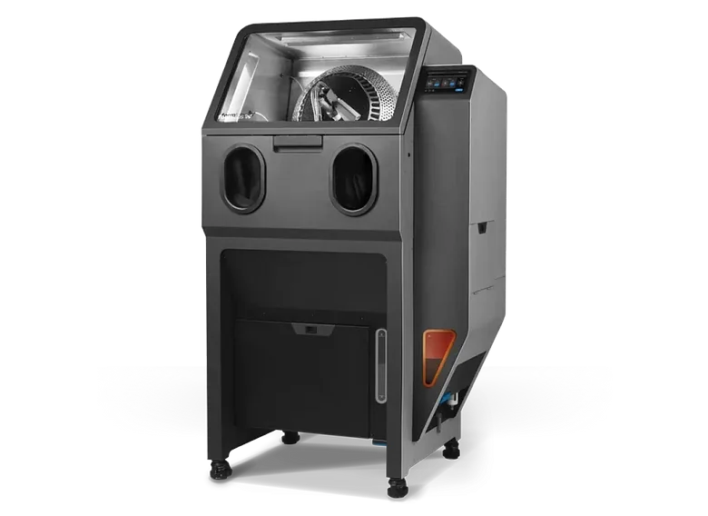

Fuse Blast
Owned the media hopper from early prototype to production
Designed the hopper that keeps Fuse Blast's media clean: a mesh filters out powder and worn media on every pass, extending media lifetime. Built from sheet metal, extruded aluminum, and sand-cast parts.
